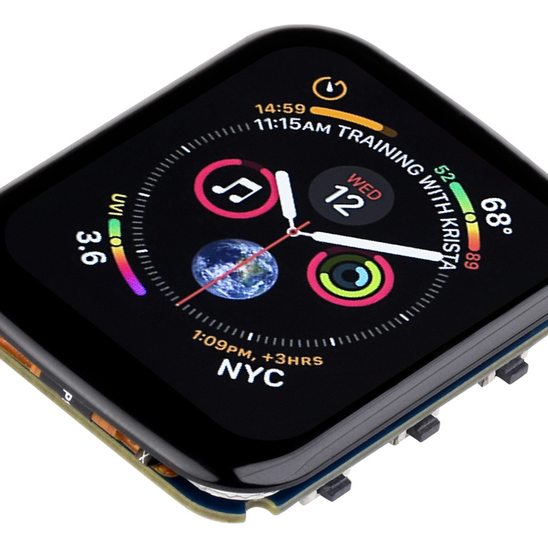

No app
Borrow the phone
Use capabilities already present on the device instead of requiring a companion install.
Calendar Puck · hardware concept
A one-purpose desk object that turns a tap into a calendar note—without asking someone to install an app, join Wi-Fi, or understand the machinery behind it.
Prototype story · physical NFC path not yet proven
Micah Alpern · Hacker Dojo

The job
The experience is for a shared room, not a personal gadget. The object should be legible, local, and calm enough that anyone can use it once.
Experience contract
No app
Use capabilities already present on the device instead of requiring a companion install.
No cloud
A nearby Mac performs calendar work; the puck stays thin and purpose-built.
No mystery
The display must make ready, transfer, success, and failure unmistakable.
Selected hardware
The development board provides a 1.69-inch touch display and ESP32-S3 platform. It is a real component—not evidence that the final offline handoff already works.
Architecture
Physical truth
The selected board is real. The round desk object is not. Industrial design should follow proof of the radio path, tap semantics, phone behavior, and failure recovery on physical devices.
Evidence ledger
| Claim | Status | Next evidence |
|---|---|---|
| Local Mac can own calendar credentials | Architecture established | End-to-end host demo |
| LAN HTTP diagnostic path | Useful for development | Keep explicitly non-final |
| App-free, offline, near-one-tap handoff | Hypothesis | Physical NFC/phone matrix |
| Final puck interaction | Concept | Usability test on real enclosure |
Takeaway
The simpler the object feels, the more honest its prototype evidence must be.
Calendar Puck · concept status is part of the design